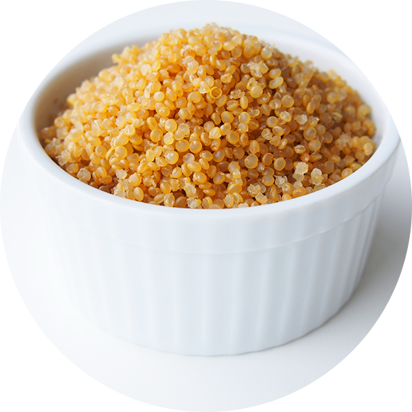

Tasty Valhalla Quinoa Recipe

This Quinoa concoction will cure all diseases and will make you feel like home
Freyja, the goddess loved this dish ❤️
Ingredients
- Quinoa
- Chicken broth
- Asparagus
- Cream cheese
- Olive Oil
Steps
- Boil water with a pinch of salt and let the quinoa boil for 15 minutes
- once it is soft, drain excess water and add the asparagus and the cream cheese
- Cook for 5 minutes or until all the cheese is mixed with all the other Ingredients
- On serve, add a little splash of olive oil to improve taste
- VOILA!, Tasty Valhalla Quinoa is ready!
Back